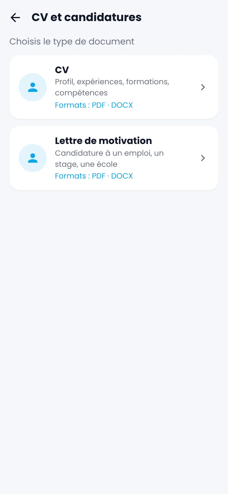
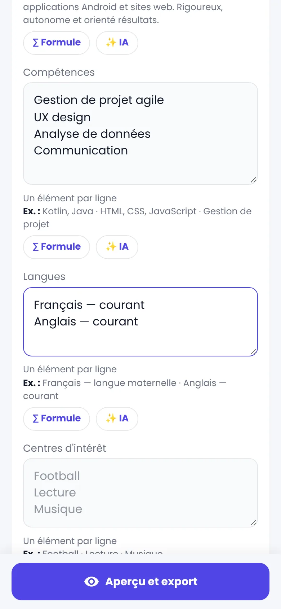
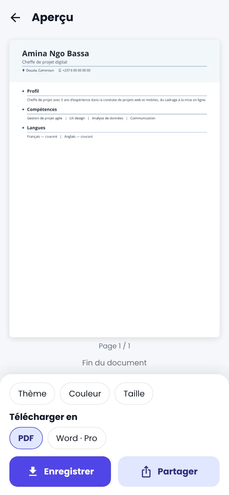
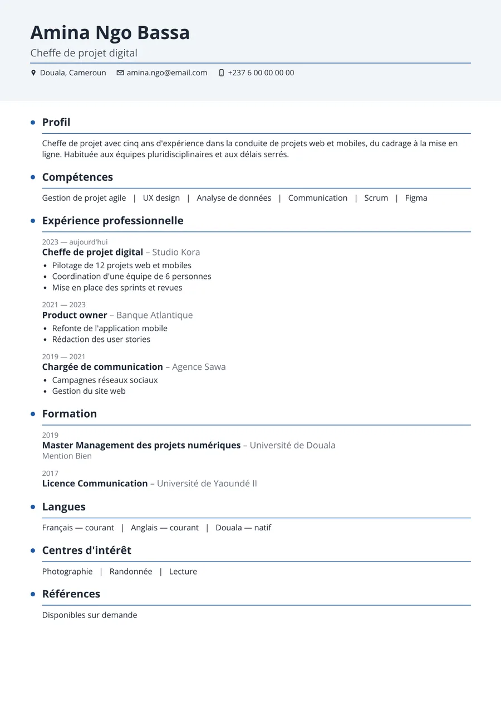
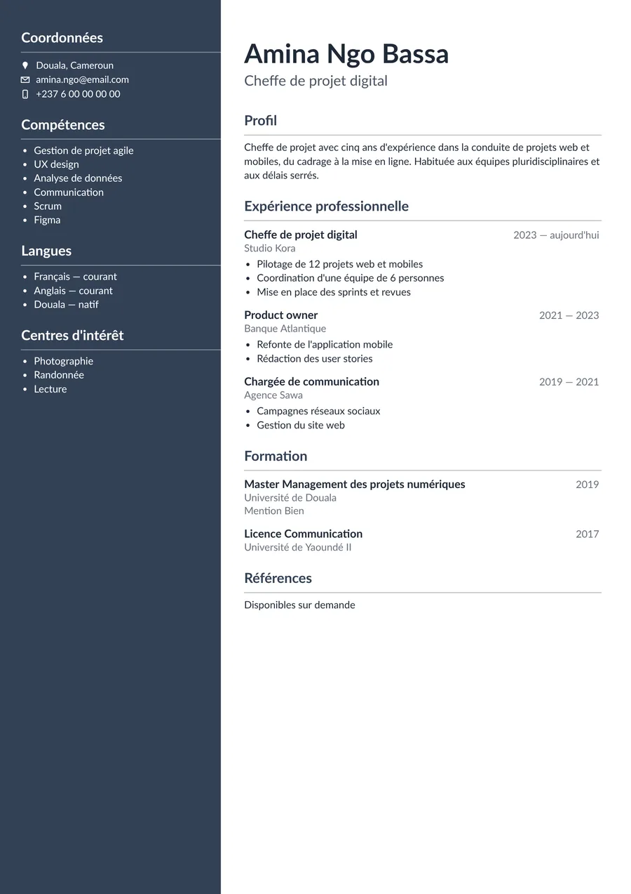

FAFIO, l’atelier de documents dans la poche
Une application Android et web qui transforme quelques champs remplis en documents prêts à imprimer : CV, rapports, mémoires, lettres et exposés.
- 18
- types de documents, du CV au mémoire
- 4
- formats : PDF, Word, PowerPoint, image
- 3
- langues, dont l’arabe de droite à gauche
- 100 %
- conçu et développé par axOlut
Le point de départ
Au Cameroun, beaucoup d’étudiants paient un cybercafé pour mettre en forme un rapport de stage ou un mémoire, et perdent des heures sur des pages de garde, des sommaires ou des formules qui se décalent. Les outils existants sont pensés pour d’autres normes et d’autres usages.
Notre réponse
Une application où l’on remplit simplement des champs guidés. FAFIO s’occupe de tout le reste : page de garde aux normes camerounaises, titres numérotés, sommaire, équations, tableaux, graphiques, thèmes et polices. Le résultat s’exporte en PDF, en Word modifiable ou en PowerPoint.
Une interface pensée pour le téléphone
Des écrans simples, des réglages à portée de pouce et un aperçu fidèle du document avant l’export.




Ce que nous avons construit
Un moteur de documents maison
Les fichiers Word, PowerPoint et PDF sont générés directement sur le téléphone, sans serveur, avec le même rendu sur Android et sur le web.
Formules et graphiques
Équations LaTeX rendues en vraies équations Word, graphiques générés à partir de données saisies.
Thèmes, couleurs et taille du texte
Des modèles illustrés, une palette de couleurs et un réglage de taille qui s’appliquent à tout le document.
Quatre modèles de CV
Bandeau, classique centré, barres latérales foncée et claire, avec photo facultative.
Assistant de rédaction IA
Une aide à l’écriture intégrée aux champs, avec des coûts d’utilisation maîtrisés.
Installable partout
Application Android native et version web installable sur iPhone, Android, Windows et Mac.
Des documents qui donnent envie d’être lus
Quatre modèles de CV générés par FAFIO, présentés ici avec un profil fictif.




Sous le capot
Une application Android native en Kotlin et Jetpack Compose, un moteur de documents partagé entre Android et le web, une application web progressive pour iPhone et ordinateur, et une compilation automatisée à chaque version.
Un projet en tête ?
Parlez-nous de votre idée : vous recevez une première réponse rapidement, et un devis clair avant tout engagement.